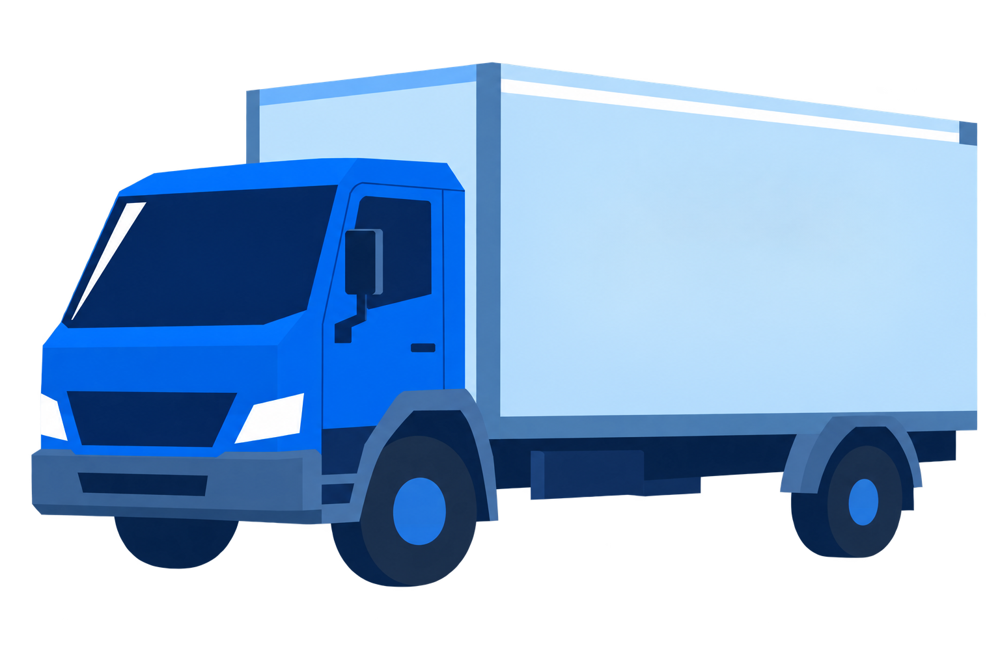

ROLE-BASED INTERFACES
按角色划分功能
货主关注订单进度，司机需要判断和执行任务，车主负责车辆安排。因此，三端采用不同的首页内容和功能入口。
SHIPPER EXPERIENCE / 货主端
按流程组织表单
发布页先填写收发地址，再选择车型、时间和货物信息，费用与确认按钮放在底部。订单列表按状态分类，方便发布后继续查找和跟进。
表单分组
收发地址使用相同的字段结构，并用“发”“收”标记区分。订单卡片固定展示路线、状态和时间，便于逐条比较；详细进度放在详情页，控制列表的信息量。
DRIVER EXPERIENCE / 司机端
按阶段突出任务
接单前突出运费、距离和装载要求，供司机判断是否适合接单。接单后优先展示当前地点与待办操作，收益则放在独立页面查看。
主操作前置
任务页按提货、运输、交付展示进度，底部保留当前步骤的主要按钮。收益页将到账金额、统计周期和每日明细分层展示，方便核对收入。
FLEET EXPERIENCE / 车主端
集中展示调度信息
调度时需要同时核对车型、载重、司机和提货距离，因此将这些信息放在同一张车辆卡片中，避免反复进入详情页确认。
统一车辆字段
车辆列表使用一致的字段位置，并按提货距离排序。可调度和车型不符分别标注；在途页将延迟、异常与正常车辆区分，方便确定需要处理的任务。
VISUAL LANGUAGE
统一视觉规范
三端共用按钮、卡片和状态标签的样式。同类信息保持相同的视觉表达，让用户切换页面时沿用已有的识别习惯。
主色与辅助色
蓝色用于选中导航和主要按钮，浅蓝用于信息分组，白色卡片与页面背景区分内容。运输、完成和异常等状态同时使用颜色与文字标注。
数据层级
用字号和字重区分关键数字、业务标题与辅助信息。
统一状态样式
COMPLETE INTERFACE COLLECTION
三端界面总览
以下按货主、司机和车主分组展示 24 个页面。每组围绕主要任务排列，便于查看列表、详情、操作与结果页面之间的信息衔接。
按发货流程排列地址、服务选择、订单跟进与费用页面
按找单、提货、运输和收入核对的任务顺序排列
展示车辆安排、在途监控、异常处理与账单管理页面
三端各有侧重，设计保持一致
这套设计根据三类角色的工作内容安排页面结构，再通过一致的字段、状态和按钮样式，明确每个页面需要查看的信息与执行的操作。